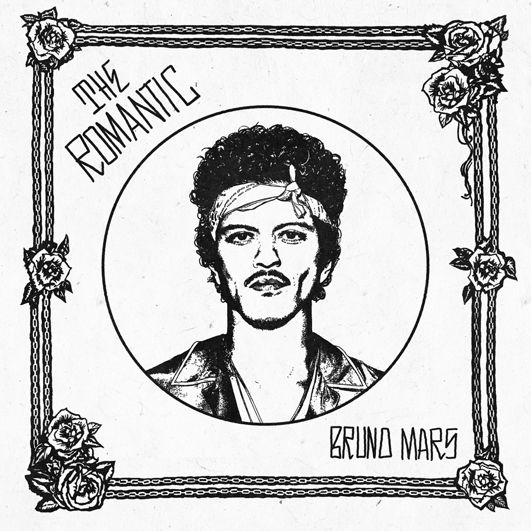

Vlatsním jménem: Peter Gene Hernandez.
Narodil se 8. října 1985 na Havaji.
Je americkým zpěvákem, autorem písní a hudebním producentem.
Je známy pro své mezinárodní hity jako: JUST THE WAY YOU ARE nebo WHEN I WAS YOUR MAN.
Po deseti letech tento rok vydává své nové album THE ROMANTIC a vyjíždí na celosvětové turné.
Praha na seznam bohužel není, takže fanoušci musí na jeho koncert do nejbližšího Berlína v Německu.
Bruno Mars je za mě naprosto výjimečný umělec. Jeho hudba spojuje moderní pop music s klasickými žánry jako soul, funk a další.
Každá skladba je jedinečná. Bruno dokáže být citlivý a jemný, ale zároveň energický a silný.
